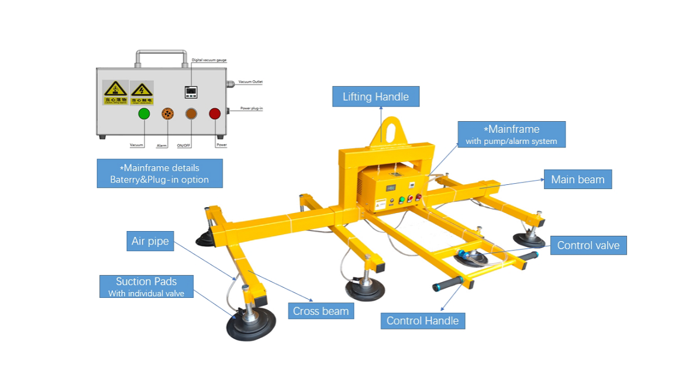

Strojevi / Vakuumski podizač
Vacu-lift
Standardni vakuumski sustavi za pažljivo podizanje tereta, pa i osjetljivih proizvoda. Tehnika je dokazana i testirana na izdržljivost.

Za lim
Dizanje lima bez ogrebotina
Prilagodljiv
Sustav se konfigurira prema zahtjevima dizanja. Svaki vakuumski držač ima individualnu kontrolu, pa se prilagođava veličini tereta.
Za logistiku lima
- Utovar i istovar strojeva za obradu metala, poput laserskih rezača
- Skladištenje i premještanje metalnih ploča
- Postavljanje kompozitnih materijala
Na vašu dizalicu
Može se koristiti s kranom, viličarom ili manipulatorom, pa ima vrlo širok raspon primjene.
Upit
Koliko teške ploče dižete?
Pošaljite format i masu ploča te čime ih dižete, pa ćemo složiti podizač. Ili nazovite +385 91 111 4600.